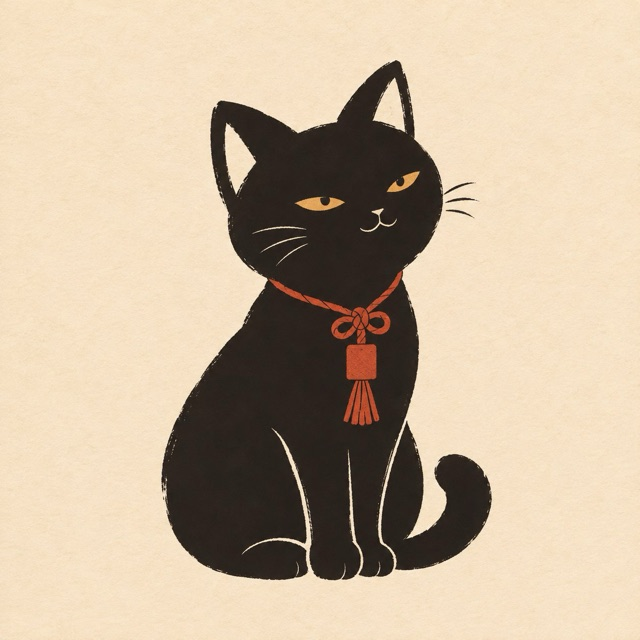

星を読むのは、黒ねこの占い師くろみつ
あなたの運気を上げる書は、書家・夢香が書きます。
黒蜜みたいに、甘くて、ちょっと深い。黒ねこの占い師です。
くろみつは、星の動きを「こわい予言」ではなく「やさしい道しるべ」として届けます。悪いことが起きると脅したりはしません。あなたがもう持っている力に、そっと気づいてもらうための占いです。
何千年も受け継がれてきた3つの占術と、天文計算で徹底分析
同じ星座でも、同じ内容の鑑定書は一通もありません。鑑定文の作成にはAIを使っています。占いは毎日を前向きに過ごすためのヒントで、結果を保証するものではありません。
運気が上がる書を書くのは
くろみつが読んだあなたの星から、
今のあなたを守る一文字を選び、
ひと筆ずつ心をこめて書きます。
国内外で作品を発表する書家。額装作品は38万円でお迎えいただいています。